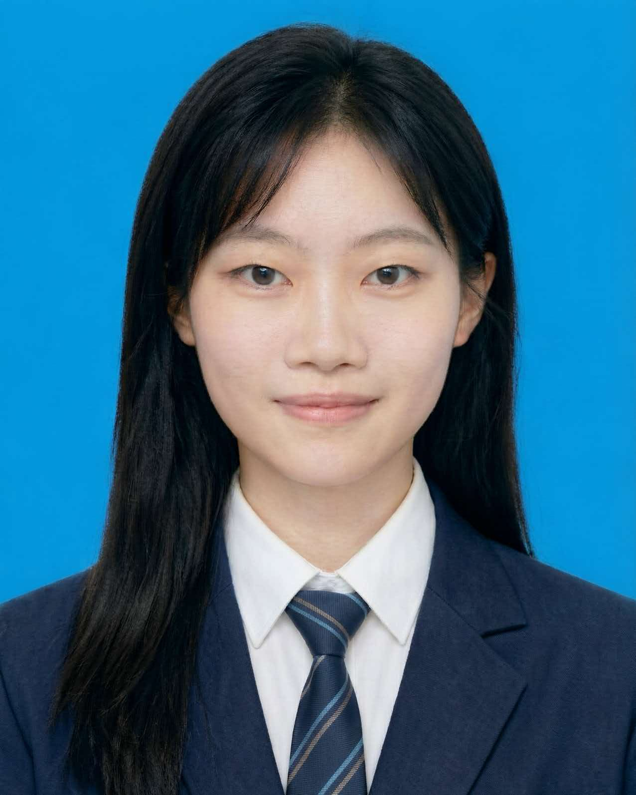

团队介绍
西安建筑科技大学管理学院师生联合研究团队
指导教师
余波 老师
西安建筑科技大学管理学院 · 助理教授、硕士生导师
研究方向：环境经济与城市经济学研究
主持项目：国家自然科学基金青年项目（C类）、陕西省自然科学基础研究计划青年项目（C类）、陕西省社会科学基金、陕西省哲学社会科学研究专项，联合主持澳门基金会社会科学基金项目
研究成果：项目相关咨政报告被陕西省人民政府办公厅采用。作为共同一作或第一作者发表相关论文至《Journal of Environmental Economics and Management》《China Economic Review》《Accounting&Finance》《陕西社会科学》。担任Asian-Pacific Economic Literature客座编辑
学术荣誉：研究成果在American Economic Association等知名年会中进行汇报展示，先后获得2022年越南经济学会最佳论文二等奖、2021年度中国留美经济学年会邹至庄最佳论文二等奖、2020年中国留美经济学年会邹至庄最佳论文提名奖、第二届北京大学经济科学博士论坛最佳论文奖、第二届全国数量经济学博士论坛最佳论文奖
学生团队
本项目由4名本科生组成跨专业团队，历时12周完成调研、建模与报告撰写。

石一晶
团队负责人 · 数管2501
主要职责：项目统筹、文献综述、因果推断建模
技能特长：Stata编程、DID/SCM方法、学术写作
个人感悟："从课本公式到真实数据的跨越,让我真正理解了计量经济学的力量。对地理信息科学、空间分析和区域经济交叉研究有浓厚兴趣。"
李毅聪
数据工程师 · 数管2502
主要职责：多源数据融合、机器学习建模、特征工程
技能特长：Python (Pandas/Scikit-learn)、AutoML、数据清洗
个人感悟："负责卫星遥感环境数据、夜间灯光数据、高德地图API路况和货车GPS轨迹的处理与整合，在指导教师带领下完成随机森林气象校正。"
赵耐然
计量分析师 · 工商2501
主要职责：计量分析与制图、政策文本分析
技能特长：Stata、R语言、ArcGIS/QGIS、Jieba分词
个人感悟："在指导教师带领下，运用交错双重差分法和增强型合成控制法评估政策效应，用ArcGIS绘制空间分布图，用Python爬取政策文本并制作词云图。"
史盛含
调研组长 · 数管2502
主要职责：实地调研、深度访谈、问卷设计与发放
技能特长：质性研究方法、访谈技巧、问卷统计分析
个人感悟："负责调研方案、问卷及访谈提纲设计，组织实地走访，发放问卷200份，完成50人次半结构式访谈。50次深度访谈让我明白,数据背后是一个个鲜活的人和故事。"
基金项目支持
本项目在以下国家级、省部级基金项目的资金、数据和方法支撑下完成研究工作：
| 项目来源 | 项目类别 | 项目名称 | 对本次实践创新大赛的支撑作用 |
|---|---|---|---|
| 国家自然科学基金委员会 | 青年项目 | 港口铁路"最后一公里"接驳的区域生态效应及治理机制研究 | 提供区域生态效应研究的理论基础、因果识别方法与治理机制分析框架 |
| 陕西省科学技术厅 | 自然科学基础研究计划（C类） | 多源大数据下陕西陆港"公转铁"绿色经济效应测度与形成机制研究 | 提供多源数据融合方法、绿色经济效应测度模型与陕西陆港实证数据基础 |
| 陕西省社会科学界联合会 | 社科基金年度项目 | 陕西省港口运输集约化的绿色效应、发展路径与政策优化研究 | 提供区域绿色转型政策分析框架与港口运输集约化研究经验 |
| 澳门基金会 | 社会科学项目 | 复兴丝绸之路：偏远地区基建的证据与澳门的角色研究 | 提供跨区域基础设施建设比较研究视角与国际化研究经验 |
在国家自然科学基金青年项目（30万元）、陕西省科技厅自然科学基础研究计划青年项目（5万元）等项目的资金、数据和方法支撑下，团队完成并完善本次大学生新文科实践创新大赛的研究工作。
团队协作与时间线
📅 12周项目时间轴
第1-2周：文献综述与方案设计
梳理国内外绿色物流、因果推断相关文献60余篇；确定研究框架、数据来源与技术路线；完成开题汇报。
主导成员：石一晶、周心怡
第3-5周：数据采集与清洗
下载ECMWF、NPP-VIIRS等卫星数据；爬取工商注册、政策文本数据；设计问卷并发放186份；完成50次深度访谈录音与文字整理。
主导成员：李明轩、王浩宇、赵梓豪
第6-8周：建模与因果推断
运用随机森林、XGBoost进行特征工程与降噪；构建交错DID、增强合成控制模型；完成平行趋势检验、安慰剂检验等稳健性分析。
主导成员：石一晶、李明轩、陈思琪
第9-10周：空间分析与可视化
运用ArcGIS/QGIS绘制空间分布图、网络通达图；制作交互式图表与词云；完成数据仪表板搭建。
主导成员：张雨晴、刘俊杰
第11-12周：报告撰写与汇报
撰写1.5万字研究报告；凝练政策建议；制作汇报PPT与网站；完成项目答辩与成果展示。
主导成员：周心怡、刘俊杰（全体成员参与）
团队收获与成长
💡 技能提升
- 技术能力：掌握Stata、Python、GIS等工具，从"听说过"到"能上手"
- 研究素养：学会文献检索、因果推断逻辑、稳健性检验等学术规范
- 问题意识：从"完成作业"到"发现真问题、解决真问题"的思维转变
- 跨学科协作：经济学、统计学、城市规划、信息技术的融合实践
🎯 实践体会
- 数据不会说谎，但需要正确的提问方式 —— 因果推断的严谨性让我们深刻理解"相关≠因果"
- 田野调查与大数据分析可以相互印证 —— 居民访谈揭示的噪音问题，在遥感数据中找到了空间分布规律
- 研究成果要"既能上天又能入地" —— 既有学术价值，又能为政策制定提供可操作建议
致谢
感谢余波老师在研究设计、方法论与论文写作各环节的悉心指导；感谢186位问卷受访者与50位深度访谈对象的真诚分享；感谢所有审阅本报告并提出宝贵意见的专家学者。
本项目虽然历时仅12周，但团队每位成员都付出了大量心血。从凌晨跑代码到深夜整理访谈录音，从反复修改模型到字斟句酌打磨报告，这段经历让我们真正体会到"做研究"与"学知识"的区别。感谢彼此的陪伴与支持，这段经历将成为我们大学生涯最宝贵的记忆之一。
联系我们
西安建筑科技大学管理学院
指导教师：余波 老师
团队负责人：石一晶
项目周期：2026年6月 - 2026年9月